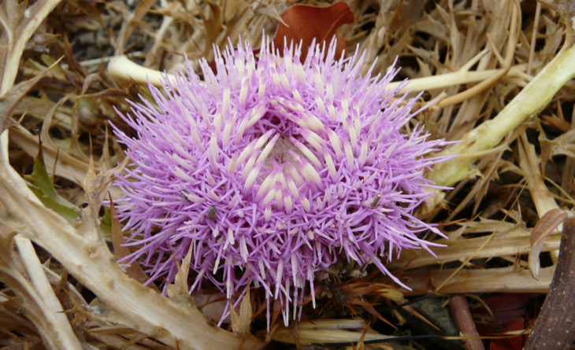
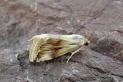
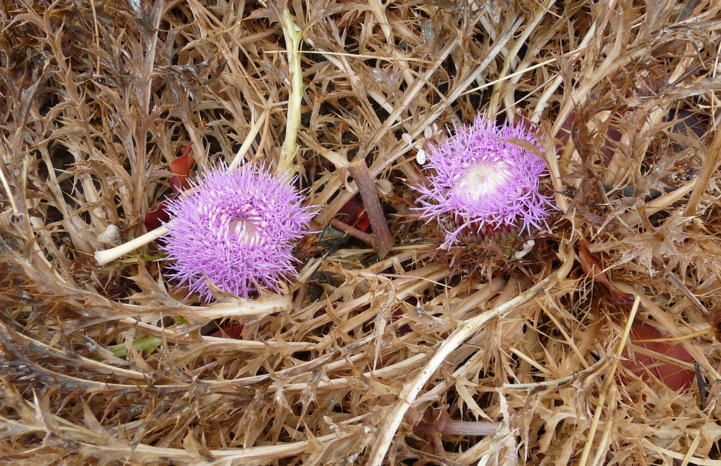
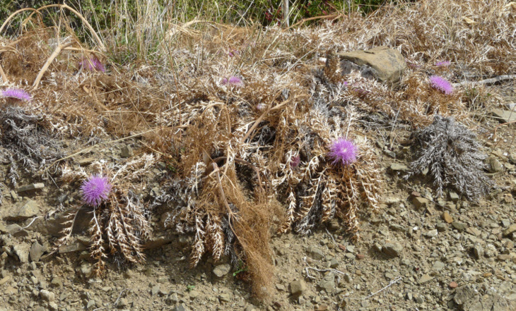
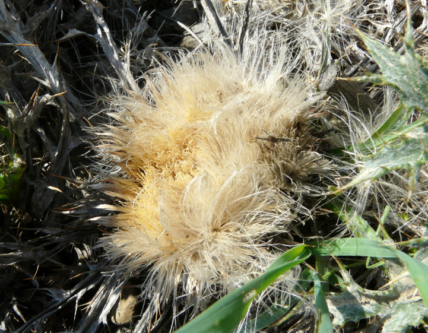
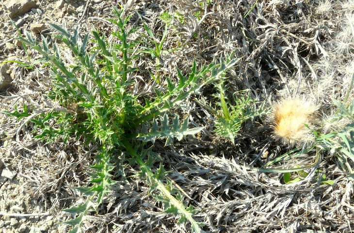
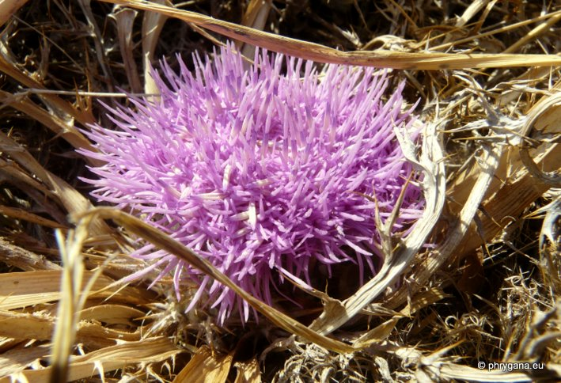

| PHRYGANA | Fauna | Flora | Galles | liste des espèces |
contact -
info - commentaires phrygana1 (at) gmail.com |
| Particularités crétoises | nouveautés | Mines | ressources naturelles |
| Carlina gummifera (L.) LESS. |
| 129 | Flora | ASTERACEAE | Cardueae | Carlina L. |
 Carlina gummifera Melambes (Agios Giorgos) 11 septembre 2009 |
| Syn.: Atractylis gummifera L. Chamaeleon gummifer (L.) CASS. | |
| la Carline à gomme -- Stemless Atractylis | |
| Feuilles: oblongues à lancéolées, à lobes épineux, fanées à la floraison. | |
| Plante acaule. | |
| Fleurs: un gros capitule (30 -70 mm), à fleurs tubulées roses à rose foncé; bractées centrales à 3 épines terminales, les extérieures à une seule épine terminale. | |
| Tige souterraine épaisse, charnue | |
| Hauteur: 05 - 20 cm | Type biologique: hémicryptophyte à rosette |
| Floraison: (juillet-) août septembre octobre | |
| Altitudes: 1 – 1300 m | |
| Statut en Crète: indigène | |
| Biotopes en Crète: phrygana, bords des routes, terrains vagues, champs abandonnés, collines sèches. | |
| Distribution: région Méditerranéenne européenne, Afrique du nord | |
| Usage culinaire: en Crète: les très jeunes feuilles sont consommées crues ou sautées-rissolées dans un peu d'huile d'olives | |
| Plante-hôte pour: | ||
|  | ||
| Eublemma ostrina | ||
|
 Carlina gummifera Melambes (Agios Giorgos) 11 septembre 2009 |
|
 Carlina gummifera Melambes (Agios Giorgos) 24 septembre 2009 |
|
 Carlina gummifera Melambes (Agios Giorgos) 26 novembre 2009 |
|  Carlina gummifera Melambes (Agios Giorgos) 26 novembre 2009 |
|
 Carlina gummifera Melambes (Agios Giorgos) 28 septembre 2011 |
| 30 septembre 2012 |
| © paul fontaine -- © Phrygana.eu 2007 -- 2013 |